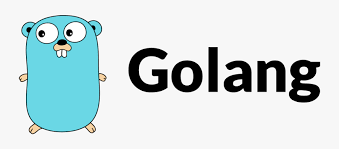

Getting Started with Go
Published on January 1, 2023

Go, also known as Golang, is a statically typed, compiled programming language designed at Google.
It is known for its simplicity and efficiency, making it a popular choice for building scalable
and concurrent systems.
---
Sometimes there is a need to import packages only for their side effects, without exploiting their use like: import _ “net/ http/ pprof”. This makes it very convenient and useful to code in Go.